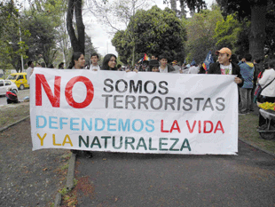
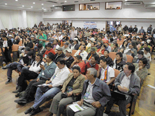

MUJERES Y HOMBRES DE 22 PAÍSES EN CUENCA
CONDENAN LA CRIMINALIZACIÓN
DE LA PROTESTA
Una criminalización sistemática de personas que rechazan la minería existe en el Ecuador. Ésta fue la conclusión del Tribunal Ético que escuchó una serie de denuncias en el marco del Encuentro Continental por el Agua y la Pachamama. Representantes de 22 países participaron en el evento. El encuentro se celebró del 21 al 24 de junio en Cuenca, con una visita previa a lugares en donde las comunidades y la naturaleza enfrentan grandes proyectos mineros e hidroeléctricos.
Visitas a comunidades afectadas
Antes de iniciar el encuentro, una Misión de Verificación visitó cantones cercanos a la ciudad de Cuenca para verificar amenazas a la soberanía alimentaria y la criminalización de la protesta. Una de las escalas fue el páramo de Kimsacocha en donde la empresa canadiense Iamgold tiene la concesión para explotar el yacimiento de oro. El páramo representa la principal fuente de agua para la ciudad de Cuenca, la tercera ciudad más grande del país.
Durante ésta y otras visitas, moradores de Tarqui, Girón, Cochapata, Santa Isabel y San Juan de Gualaceo dieron a los integrantes de la Misión de Verificación una serie de testimonios de la criminalización que han sufrido a manos del Gobierno. Los miembros de la Misión representaban la ONG dedicada a la seguridad alimentaria, FIAN, más Pablo De la Vega, coordinador de la Plataforma Continental de Derechos Humanos y periodistas de Radio Mundo Real.
Ana Heras Puchas, de Santa Isabel comentó: “Nunca fuimos consultados en nuestra comunidad sobre la concesión minera. Estamos en contra porque nos están acabando. El plato de oro no lo podemos comer, nuestros productos sí”. Y Carlota Muñoz afirmó: “Hemos visto en otros países a la gente en llagas, sin poder beber agua ni bañarse en ella por culpa de los venenos que bota la minería”.
Tribunal Ético
Jennifer Moore, coordinadora de asuntos latinoamericanos para la ONG canadiense Mining Watch (Alerta Minera), dijo que existe una profunda desigualdad en la aplicación de justicia para personas enjuiciadas por su participación en la resistencia a la minería. “Esto tiene fuertes implicaciones para la posibilidad de mantener un debate real y serio sobre el posible desarrollo minero en el país, y para asegurar que no se siga sometiendo a las comunidades campesinas e indígenas a los grandes intereses nacionales e internacionales”, precisó en una entrevista con el diario El Tiempo. Añadió que antes que se proceda con un proyecto minero, se debe hacer un análisis serio e independiente de los costos y beneficios de la actividad. Indicó que la minería representa sólo una forma de desarrollo que podría ocasionar serios impactos sobre otras formas ya existentes, como la agricultura, la ganadería y el turismo. Igualmente importante es “contar con una participación efectiva de las comunidades afectadas a lo largo del desarrollo del proyecto, bajo circunstancias en donde ellas tienen una voz decisiva sobre el desarrollo que se va a dar, además de canales para sus preocupaciones que sean efectivas, y que no corran el riesgo de ser reprimidas por cuestionar o oponerse a la actividad minera”, concluyó la señorita Moore.
Pero puesto que personas que acuden a la defensa de las comunidades y la naturaleza sí corren el riesgo de ser reprimidas, se estableció el Tribunal Ético durante el encuentro en Cuenca. El jurado se conformó de representantes de Colombia, Ecuador, Nicaragua y Uruguay.
Testimonios
Durante el encuentro, representantes de comunidades afectadas por proyectos extractivistas dieron su testimonio tanto al Tribunal Ética como a los medios de comunicación.
Arnulfo Cañar dijo a Radio Mundo Real que en su parroquia, San Bartolomé, “ya tenemos experiencia con una minera que funcionó aquí hace 20 años y aún sufrimos las consecuencias. Con quedarnos en silencio estaríamos formando parte de las minas”.
La extracción de plata y minerales para la elaboración de cerámica envenenó las fuentes de agua de esta comunidad hasta que el negocio dejó de ser rentable y la empresa abandonó sus instalaciones, dejando una poza con un peligroso nivel de metales pesados.
Otras denuncias provinieron de moradores de la comunidad de Cochapata. Las 7 800 habitantes quieren frenar la construcción de una represa por la empresa minera Explorsur S.A., del grupo El Juri. Siete de sus dirigentes han sido acusados de sabotaje y terrorismo. A pesar de que la Asamblea Constituyente de Montecristi les ortogó amnistía en 2008, por ser defensores de la naturaleza, fueron sentenciados hace poco a ocho años de prisión y se encuentran en la clandestinidad con consecuencias económicas y emocionales para sus familias.
El Tribunal Ético analizó éste y otros casos de criminalización de defensores de derechos humanos y de la naturaleza el 22 de junio. Los miembros del jurado fueron: Elsie Monge, de la Comisión Ecuménica de Derechos Humanos del Ecuador (CEDHU), Raúl Zibechi, escritor y periodista uruguayo, Lía Isabel Alvear, poeta y académica colombiana y María Hamlin, del Movimiento Internacional por la Salud de los Pueblos. Según Ramiro Ávila, profesor de la Universidad Andina Simón Bolívar y abogado, las leyes que se están utilizando para reprimir la protesta deben ser derogadas.
Algunos de los casos más notorios son los de terrorismo y sabotaje contra los principales dirigentes indígenas del país: Pepe Acacho, vicepresidente de la CONAIE; Marlon Santi, expresidente de la CONAIE y dirigente de la comunidad de Sarayacu en la lucha contra la explotación del petróleo en sus territorios; Delfín Tenesaca, presidente de la ECUARUNARI; y Marco Guatemal, presidente de la Federación Indígena y Campesino de Imbabura (FICI). Los dirigentes indígenas han sido procesados por participar en marchas contra la Ley de Agua y la Ley de Minería durante la Cumbre del ALBA en Otavalo en junio de 2010.
La amenaza minera
Según el catastro minero, existen 1990 concesiones inscritas para la exploración minera en Ecuador. La preocupación de las comunidades cercanas a las concesiones se radica en la cantidad de agua requerida para la extracción de metales y la contaminación que queda en el sitio. Por ejemplo, para minar la cantidad de oro requerida para fabricar un anillo común y corriente, se necesitan ocho mil litros de agua y se producen 20 mil toneladas de desechos.
Carlos Pérez, dirigente indígena del Azuay, pregunta: “¿Acaso es un delito defender el agua? ¿Acaso es un delito defender la Pachamama? El Ecuador es pionera en reconocer los derechos de la naturaleza y esa Constitución debe estar por encima de un Código Penal hecho en tiempos de la dictadura”.
Declaración del Encuentro
Las personas que se reunieron en Cuenca cerraron el evento con una Declaración que afirma: “Es hora de tomar urgentes medidas para frenar y revertir esta barbarie expresada en el modelo extractivista y particularmente en la minería de gran escala, así como en la ampliación de la frontera petrolera que arrebata los derechos de los pueblos, comunidades y nacionalidades sobre sus territorios y formas ancestrales de vida”. Asimismo, declara que la “agroecología es parte de la soberanía alimentaria y de la cosmovisión del Sumak Kawsay” mientras el “agua es fuente de vida y el acceso a ella constituye un derecho humano…indispensables para la reproducción de la vida”. Rechazan la criminalización de defensores de la naturaleza y las comunidades, que “se ha constituido en una política de Estado”.
A continuación, el documento declara a la Abya Yala libre de minería a gran escala y afirma la oposición a la expansión de la frontera petrolera, la construcción de refinerías y complejos petroquímicos, de hidroeléctricas y represas que cortan los ríos y permiten procesos de concentración de agua y “toda acción ilegítima que altere y devaste los bosques, páramos, manglares y demás espacios de vida”.
La Declaración ratifica al 11 de octubre como Día de la Libertad y la Resistencia Continental. Los firmantes de la Declaración se comprometen a apoyar a los pueblos afectados por actividades extractivistas. Exigen, además, “la gestión comunitaria y pública del agua como garantía para preservar los derechos de la naturaleza y de las comunidades”. Apoyan la Iniciativa Yasuní como una “propuesta concreta…contra la crisis climática, para salvar a los pueblos libres…y salvaguardar una de las zonas de mayor biodiversidad del planeta”. En este marco, la Declaración condena “la intención de explotar el Yasuní conocida como Plan B”.
Finalmente, los participantes en el Encuentro exigen la “Declaración Universal de los Derechos de la Naturaleza”, la cese de la explotación minera y de la ampliación de la frontera petrolera. Apoyan la consulta previa, libre e informada como un derecho irrenunciable de pueblos amenazados por actividades que destruyen la naturaleza y la cultura. Finalmente, exigen que se ponga fin a la criminalización de los defensores de la naturaleza.
La Declaración lleva las firmas de hombres y mujeres miembros de comunidades, organizaciones, colectivos e instituciones de Ecuador, Brasil, Uruguay, Argentina, Chile, Bolivia, Perú, Colombia, Nicaragua, Guatemala, México, Canadá, Estados Unidos, España, Italia, Inglaterra y Francia.
Fuentes: “Zamora, bajo responsabilidad de la empresa ECSA y Río Blanco, en Molleturo, Azuay, con IMC”, El Tiempo, 27 de junio de 2011 (http://www.eltiempo.com.ec/noticias-cuenca/71207-posible-explotacia-n-minera-preocupa-a-comunidades/); “Minería en contra de la Soberanía Alimentaria. Amenaza fuentes de agua en Cuenca (Ecuador) y cantones cercanos”, Radio Mundial Real, 22 de junio de 2011, www.radiomundoreal.fm; Encuentro pueblos Abya Yala por el Agua y la Pachamama, 28 de junio de 2011, http://www.inredh.org/index.php?option=com_content&view=article&id=407:encuentro-continental-de-los-pueblos-del-abya-yala-por-el-agua-y-la-pachamama-&catid=73:ddhh-ecuador&Itemid=144